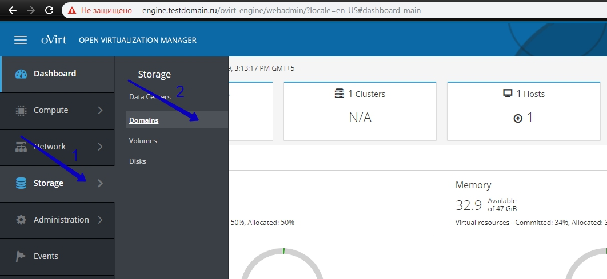
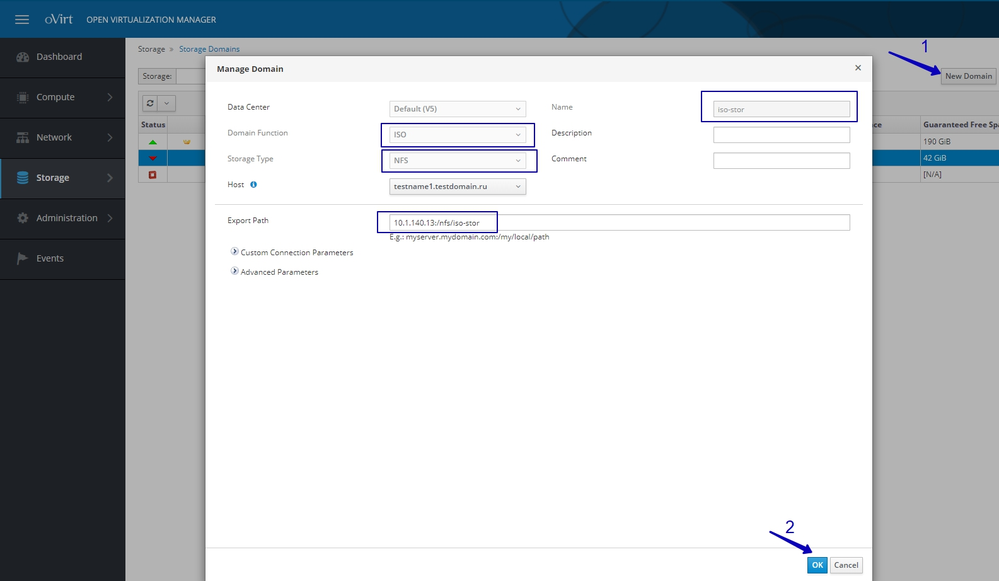
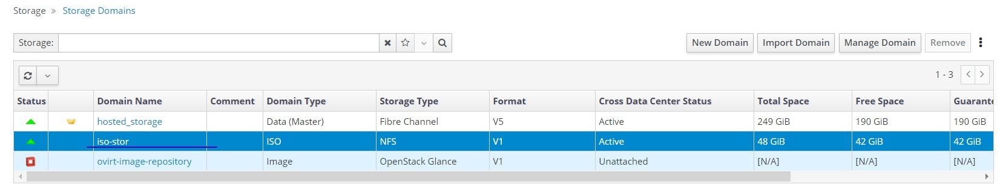
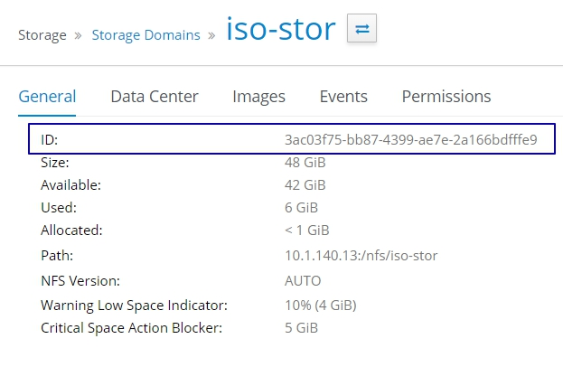
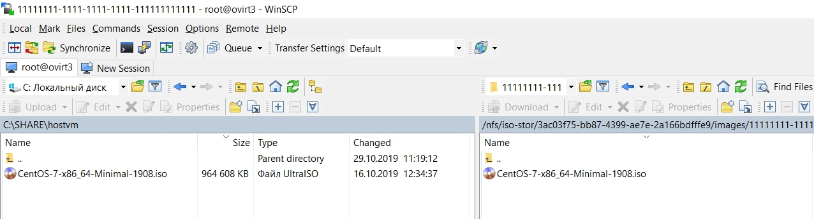
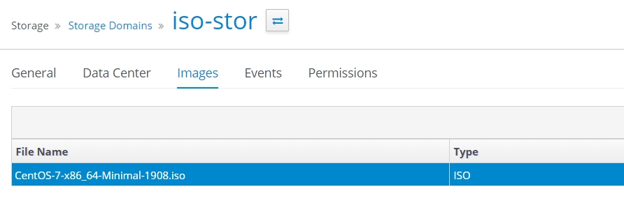
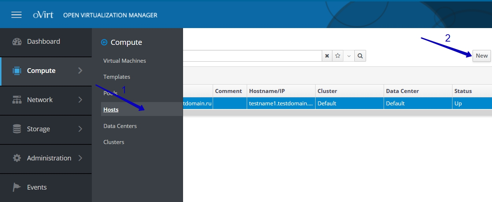
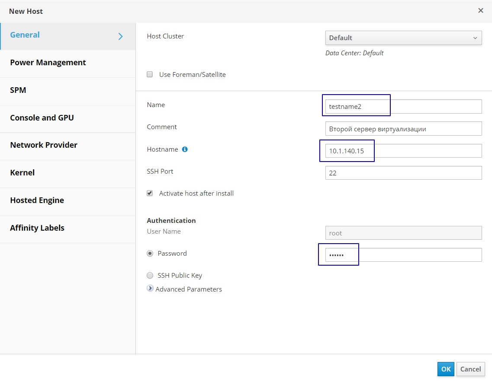
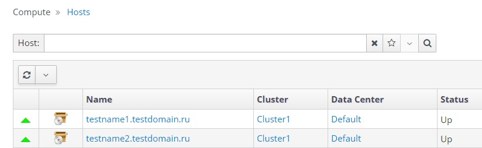

Дествия после установки виртуализации
Настройка iso-хранилища
Iso-домен нужен для хранения и доставки к виртуальным машинам iso-образов. Далее будет описано, как создать iso-домен с помощью nfs.
Настройка nfs-сервера
nfs-сервер может быть установлен на одном из хостов виртуализации
Создайте папку /nfs/iso-stor
mkdir -p /nfs/iso-stor
Создайте пользователей, необходимых для работы с хранилищем.
groupadd kvm -g 36
useradd vdsm -u 36 -g 36
Если nfs-хранилище будет настроено на хосте виртуализации, то при создании появится сообщение, что пользователь и группа уже существуют
[root@testname1 ~]# groupadd kvm -g 36
groupadd: group 'kvm' already exists
[root@testname1 ~]# useradd vdsm -u 36 -g 36
useradd: user 'vdsm' already exists
Настройте права доступа на созданную папку
chown -R 36:36 /nfs/iso-stor
chmod 0755 /nfs/iso-stor
Настроим nfs-сервер Установим необходимые пакеты
yum install nfs-utils -y
Добавим необходимые службы в автозагрузку и включим
systemctl enable rpcbind nfs-server
systemctl start rpcbind nfs-server
Настроим файл конфигурации nfs-сервера.
Для работы будем использовать текстовый редактор nano. Установим его командой:
yum install nano -y
Откройте файл /etc/exports для редактирования:
nano /etc/exports
Введите следующий текст:
/nfs/iso-stor 10.1.140.0/25(rw)
Важно!: необходимо соблюдать формат записи, лишних пробелов быть не должно.
В данной записи:
/nfs/iso-stor - путь к папке, которая будет nfs-хранилищем;
10.1.140.0/25 –IP-подсеть, которой разрешён доступ к nfs-хранилищу;
(rw) - набор опций для nfs-хранилища.
Клавишей 'ctrl'+'o' сохрание файл Клавишей 'ctrl'+'x' выйдите из редактора
Применяем новую конфигурацию командой exportfs -r
Убедимся, что ресурсы опубликованы
[root@testname1 ~]# exportfs
/nfs/iso-stor 10.1.140.0/25
Создание iso-хранилища
Откройте браузер, перейдите в панель управления https://engine.testdomain.ru
Перейдите в Storage -> Domains -> New Domain. Выберете Domain Function, Storage Type как показано на картинке ниже. В поле Export Part введите адрес вашей nfs-share в формате ip-адрес:/путь/до/папки . Нажмите OK.


Убедитесь, что iso-домен активен

Загрузка iso-образов
Для того, чтобы загрузить iso-образ в виртуализацию, необходимо поместить выбранный iso-образ в папку /путь к папке iso-домена/<domain-id>/images/11111111-1111-1111-1111-111111111111/
Получить <domain-id> можно в панели управления
Domain-ID из примера ниже - 3ac03f75-bb87-4399-ae7e-2a166bdfffe9 , /путь к папке iso-домена в предыдущем шаге обозначили как /nfs/iso-stor значит iso-образ загрузим в папку /nfs/iso-stor/3ac03f75-bb87-4399-ae7e-2a166bdfffe9/images/11111111-1111-1111-1111-111111111111/

Для передачи файла на сервер с рабочего места, где установлена ОС Windows, необходимо использовать утилиту WinSCP, которая доступна в наборе дистрибьютивов для развертывания решения.

После загрузки файлов в указанную папку, необходимо изменить владельца файла.
Перейдите в папку /путь к папке iso-домена/<domain-id>/images/11111111-1111-1111-1111-111111111111/ командой cd /путь к папке iso-домена/<domain-id>/images/11111111-1111-1111-1111-111111111111/
Назначим нового владельца файла командой chown 36:36 ./<ваш-образ>.iso . Обратите внимание, что владелец и группа файла изменилась с root root на vdsm kvm
[root@testname1 ~]# cd /nfs/iso-stor/3ac03f75-bb87-4399-ae7e-2a166bdfffe9/images/11111111-1111-1111-1111-111111111111/
[root@testname1 11111111-1111-1111-1111-111111111111]# ls -la
total 93936
drwxr-xr-x. 2 vdsm kvm 46 Oct 29 15:22 .
drwxr-xr-x. 3 vdsm kvm 50 Oct 28 19:18 ..
-rw-r--r--. 1 root root 96187182 Oct 29 15:22 CentOS-7-x86_64-Minimal-1908.iso
[root@testname1 11111111-1111-1111-1111-111111111111]# chown 36:36 CentOS-7-x86_64-Minimal-1908.iso
[root@testname1 11111111-1111-1111-1111-111111111111]# ls -la
total 93936
drwxr-xr-x. 2 vdsm kvm 46 Oct 29 15:22 .
drwxr-xr-x. 3 vdsm kvm 50 Oct 28 19:18 ..
-rw-r--r--. 1 vdsm kvm 96187182 Oct 29 15:22 CentOS-7-x86_64-Minimal-1908.iso
Перейдите в панель управления и убедитесь, то iso-образ доступен

Добавление хостов
Для того, чтобы подготовить второй и последующие серверы к работе на них необходимо установить ОС Centos7. Инструкция по установки приведена на странице Установка Centos7.
После установки ОС, подключитесь к серверу с помощью PuTTY под пользователем root. Добавьте необходимые репозитории командой с помощью команды yum install -y http://resources.ovirt.org/pub/yum-repo/ovirt-release43.rpm
Убедитесь, что сервер "видит" диск, на котором размещены виртуальные машины. Командой multipath -ll выведете доступные по FC диски.
Из примера ниже видим, что диск с guid 3600508b400099f8e0002e000036a0000, который использовался для установки первой ноды, подключен.
[root@testname2 ~]# multipath -ll
3600508b400099f8e0002e000036a0000 dm-3 HP ,HSV300
size=250G features='1 queue_if_no_path' hwhandler='0' wp=rw
|-+- policy='service-time 0' prio=50 status=active
| |- 1:0:3:1 sdg 8:96 active ready running
| `- 2:0:0:1 sdb 8:16 active ready running
`-+- policy='service-time 0' prio=10 status=enabled
|- 1:0:0:1 sda 8:0 active ready running
`- 2:0:3:1 sdh 8:112 active ready running
Имя управляющей виртуальной машины должно разрещаться на сервере. В файл /etc/hosts с помощью редактора nano добавьте запись в формате <ip-адрес управляющей машины> <engine.<domain>.ru которая сообщает системе адрес и именя управляющей машины.
Установим nano
yum install nano -y
Откроем файл и внесем в него изменения. В примере ниже мы сообщили системе, что по адресу 10.1.140.15 расположена управляющуя машина с именем engine.testdomain.ru
nano /etc/hosts
#
127.0.0.1 localhost localhost.localdomain localhost4 localhost4.localdomain4
::1 localhost localhost.localdomain localhost6 localhost6.localdomain6
10.1.140.15 engine.testdomain.ru
Клавишей 'ctrl'+'o' сохрание файл
Клавишей 'ctrl'+'x' выйдите из редактора
Командой ping -c 4 engine.testdomain.ru убедитесь, что адрес доступен для сервера
[root@testname1 ~]# ping engine.testdomain.ru -c 4
PING engine.testdomain.ru (10.1.140.15) 56(84) bytes of data.
64 bytes from engine.testdomain.ru (10.1.140.15): icmp_seq=1 ttl=64 time=0.250 ms
64 bytes from engine.testdomain.ru (10.1.140.15): icmp_seq=2 ttl=64 time=0.210 ms
64 bytes from engine.testdomain.ru (10.1.140.15): icmp_seq=3 ttl=64 time=0.238 ms
64 bytes from engine.testdomain.ru (10.1.140.15): icmp_seq=4 ttl=64 time=0.200 ms
--- engine.testdomain.ru ping statistics ---
4 packets transmitted, 4 received, 0% packet loss, time 2999ms
rtt min/avg/max/mdev = 0.200/0.224/0.250/0.025 ms
Откройте панель управления, перейдите в Compute -> Hosts, нажмите кнопку New

В открывшемся окне заполните поля Name, Hostname(достаточно указать ip-адрес), Password от учетной записи root. Нажмите Ок

После заверщения установки, оба хосте будут доступны для работы

Настройка рабочего места пользователя
Для доступа к виртуальной консоли виртуальных машин необходимо использовать программу virt-viewer, которая доступна в наборе дистрибьютивов для развертывания решения.